Per cominciare
Dal menu al primo loop in quattro gesti
Non serve configurare niente: OpenOrc parte in Do maggiore con un suono pronto. La MPK mini IV funziona appena la colleghi.
Apri l'app
Area App di Cirmolo, poi OpenOrc. Mentre è aperta la console non va in sospensione.
Suona
Croce e A B X Y suonano gli accordi della tonalità. I dorsali li colorano.
Cambia suono
Tieni SELECT e premi su o giù: il suono cambia subito, anche mentre suoni.
Registra un loop
SELECT + A registra, di nuovo A chiude il giro. Poi suonaci sopra.
Per uscire: MENU, poi A. Impostazioni, suono corrente e loop restano salvati.
I comandi della Flip
Ogni tasto, tre mestieri
Nella pagina Suona i tasti suonano accordi. Tenendo SELECT diventano funzioni. Alcuni fanno sempre la stessa cosa. Scegli lo strato, cambia tonalità e prova i dorsali: i nomi sono calcolati come li calcola l'app.
Pagina Suona
SELECT tenuto
Suoni, tonalità e loop senza lasciare la pagina
Tocca SELECT per cambiare pagina. Tienilo premuto e compare l'elenco dei suoni: finché lo tieni, gli altri tasti diventano scorciatoie. Se premi subito un altro tasto, non devi aspettare che l'elenco si apra.
- ↑ ↓suono precedente o successivo: cambia subito, si sente mentre suoni
- L1 R1categoria precedente o successiva: Atmosfere, Tastiere, Corde, Arpeggi, Campane, Ottoni, Tuoi
- ← →tonalità un semitono sotto o sopra
- L2scala maggiore o minore
- R2modo tonalità acceso o spento
- A B Yloop: registra, suona o ferma, annulla
- Xbatteria accesa o spenta
Quando lasci SELECT l'elenco si chiude e resti dov'eri. Funziona in tutte le pagine.
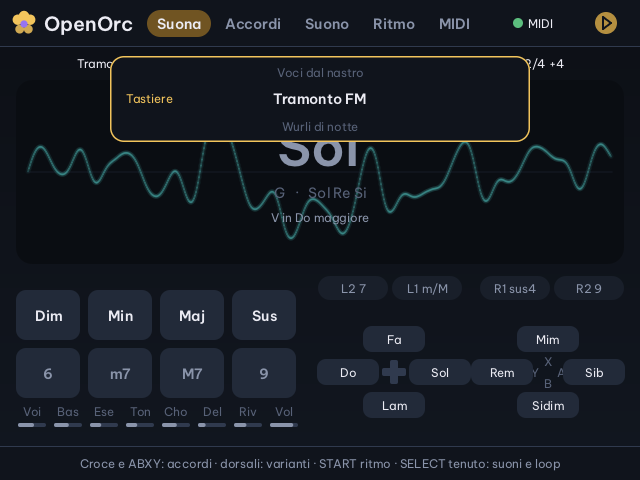
Dalla MPK, con i pad 50 e 51, il nuovo suono compare per un attimo in alto, tra il precedente e il successivo.
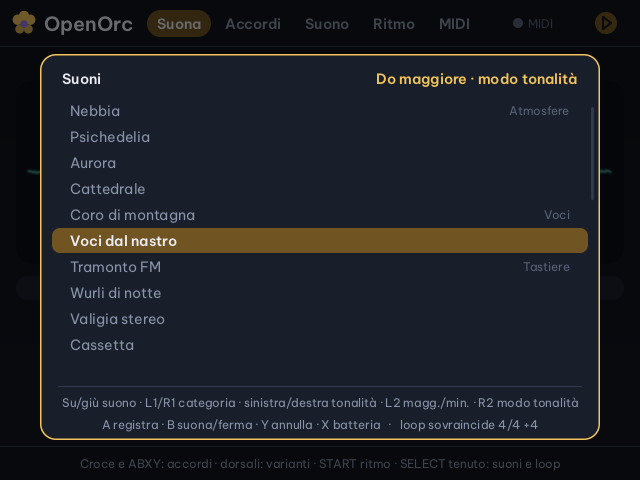
L'elenco dei suoni con SELECT tenuto: categoria a destra, tonalità in alto, comandi e stato del loop in basso.
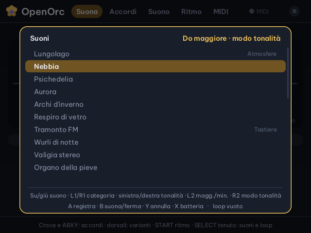
Lo stesso elenco catturato dalla Flip vera, il 12 ottobre 2026.
La pagina Suona
Tutto quello che serve mentre suoni, in un colpo d'occhio
 1
2
3
4
5
6
7
8
9
1
2
3
4
5
6
7
8
9
- Le pagineSuona, Accordi, Suono, Ritmo, MIDI. Tocca SELECT per passare alla successiva.
- Spia MIDI e trasportoVerde con la tastiera collegata. Il simbolo pulsa sul battito quando premi START.
- Riga di statoSuono, esecuzione, tonalità (dorata con il modo tonalità), tempo e loop. Un asterisco dopo il suono vuol dire «modificato, non salvato».
- L'accordoNome grande, simbolo inglese, note e grado nella tonalità, per esempio «vi7 in Do maggiore».
- OscilloscopioL'uscita audio vera, dietro al nome.
- Il voicingLe note con l'ottava e il basso: è il rivolto scelto dalla manopola K1.
- Pad della MPKCompaiono solo con la tastiera collegata; quelli premuti si accendono.
- Le manopoleOtto barrette: quella appena girata si accende in oro.
- Tasti della FlipOgni tasto dice l'accordo che suonerebbe adesso, dorsali compresi.
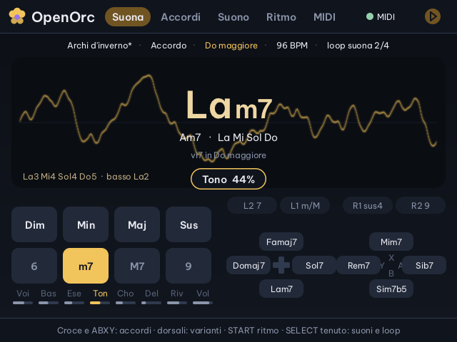
Giri K4: compare «Tono 44%», la barretta si accende e il suono prende l'asterisco.
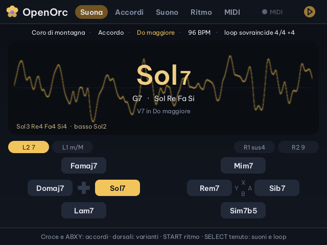
Senza tastiera i tasti della Flip diventano grandi. Qui destra + L2: Sol7.
Akai MPK mini IV
Tieni un pad, premi un tasto: l'accordo è servito
Collegala alla porta USB-C di sopra, anche con l'app aperta. Funziona con i valori di fabbrica dei suoi preset utente. Sulla MPK spegni Chords, Scales, ARP e Note Repeat: gli accordi li costruisce OpenOrc.
- Pad + tastoMin + Re = Rem. Conta il nome della nota, non l'ottava: il registro lo decide K1.
- Fila in bassoAggiunge l'estensione: Min + m7 + Re = Rem7.
- CombinazioniDim + Maj = aumentato · Min + Sus = sus2 · 6 con una settima = tredicesima.
- Senza padNote singole, la melodia, con lo stesso suono.
- Modo tonalitàPad 48: ogni tasto della scala dà il suo accordo; quelli fuori scala prendono il grado sotto.
- DinamicaPiù forte suoni, più l'accordo è forte e brillante.
Le manopole
- Rotella pitchpitch bend, ±2 semitoni
- Rotella modvibrato
- Pedaletiene accordo e note finché non lo lasci
- Program changesceglie il suono: è il numero della tabella dei 25 suoni; dopo vengono i tuoi
Pagina Accordi
Come parte l'accordo
Qui scegli tonalità e scala, il voicing e il modo di esecuzione. La «Quantità», che è anche la manopola K3, cambia significato a seconda del modo.
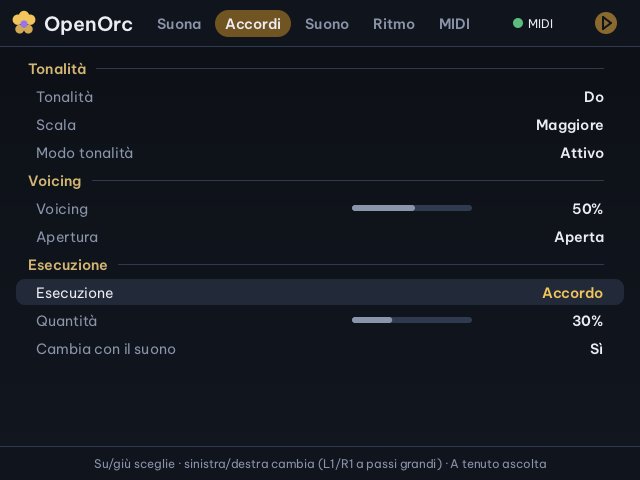
Voicing. OpenOrc sceglie da solo il rivolto dell'accordo, vicino al registro che scegli: a sinistra grave, a destra acuto. Passando da un accordo all'altro muove le voci il meno possibile, così il giro suona legato.
Apertura. Stretta, aperta o ampia: quanto sono distanti le note dell'accordo.
Cambia con il suono. Con «Sì» ogni suono porta la sua esecuzione. Con «No» tieni la tua, per esempio un arpeggio, anche cambiando suono.
Arpeggio e Pattern seguono il tempo della pagina Ritmo. Con START si agganciano alla griglia di batteria e loop.
Pagina Suono
Crea un suono tuo in tre passi
Parti dal suono che ci somiglia di più, cambialo, salvalo. I tuoi suoni finiscono in fondo all'elenco, nella categoria Tuoi.
Scegli la base
Riga Suono: sinistra e destra scorrono i suoni, L1 e R1 saltano di categoria.
Cambialo
Righe del Timbro e degli Effetti, oppure le manopole, oppure Variazione casuale. Compare l'asterisco.
Salvalo
Salva come nuovo suono e A: «Nebbia» diventa «Nebbia 2». Il nome lo cambi poi con Rinomina.
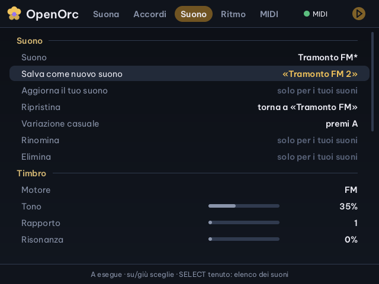
Il suono cambiato ha l'asterisco; a destra di «Salva come nuovo suono» c'è già il nome che avrà.
- Salva come nuovosalva il suono così com'è con un nome nuovo
- Aggiornasalva le modifiche sul tuo suono (non su quelli di fabbrica)
- Ripristinatoglie le modifiche e torna al suono salvato
- Variazionesposta un po' timbro, inviluppo ed effetti; ogni A una nuova
- Rinominasi scrive con una tastiera USB collegata alla Flip; Invio o A conferma, B annulla
- EliminaA due volte
Il volume non fa parte del suono: resta quello che hai scelto, da un suono all'altro. Le modifiche non salvate restano anche uscendo, finché non carichi un altro suono.
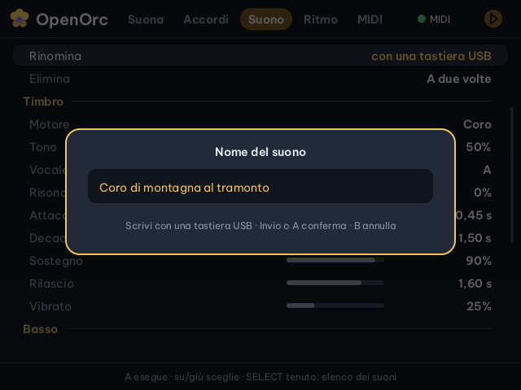
Rinomina, con una tastiera USB.
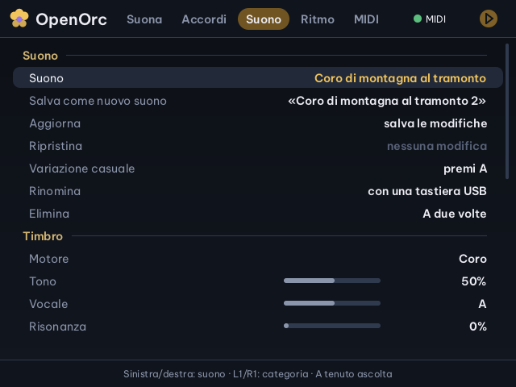
Il tuo suono: Aggiorna, Rinomina ed Elimina si accendono.
I file dei tuoi suoni
Ogni suono tuo è un file di testo in Saves/openorc/suoni/. Si copia su un'altra console, si condivide e si ritocca con un editor. OpenOrc ne tiene fino a 64.
nome=Nebbia 2 engine=0 tone=0.3 character=0.7 attack=1.2 … stereo=0.5 spread=2
Timbro
Sette motori, e uno spazio largo
Sette motori. Il motore decide la natura del suono. Il «Carattere» cambia nome e significato con il motore. Le forme d'onda qui sotto sono indicative: danno l'idea del carattere di ogni motore.
Prova l'ampiezza stereo
Quattro effetti che cambiano carattere al suono. Risonanza: il filtro canta, fino all'acido. Shimmer: il riverbero rimanda la coda un'ottava sopra, da cattedrale. Nastro: il suono passa da una cassetta, con la velocità che oscilla e un filo di fruscio. Pompa: con START il suono respira sul battito, come nella house francese.
A 0 tutto è al centro. Alzandola, le note dell'accordo si aprono dalla più grave a sinistra alla più acuta a destra, e arpeggi, strum e arpa passano da un lato all'altro.
L'Ensemble apre anche i suoi oscillatori, come un coro largo. Nel Piano elettrico il tremolo va da un lato all'altro, come nei piani a valigia. Il basso resta sempre al centro.
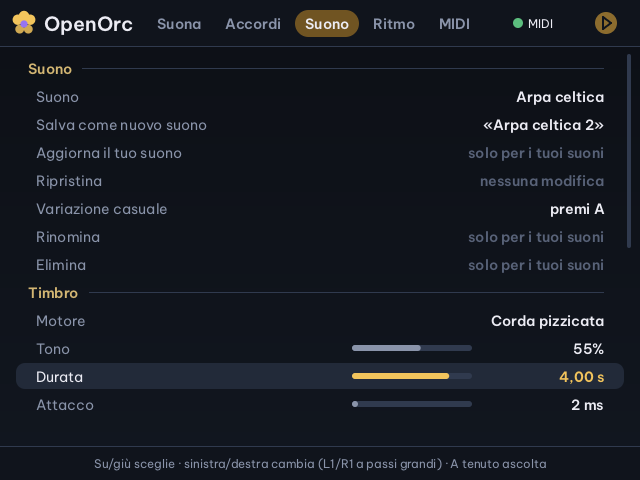
Con l'Ensemble il Carattere diventa Desintonia; sotto c'è la Risonanza. Con la corda pizzicata diventa Durata, con il coro Vocale.
Suoni di fabbrica
Ventotto punti di partenza
Il numero è quello del program change. Quelli segnati «stereo» si allargano a destra e a sinistra; i più nuovi usano il coro, lo shimmer, il nastro, la pompa e la risonanza.
Pagina Ritmo
Batteria, tempo e un looper a strati
Il looper registra accordi e note, come un pedale. Ogni sovraincisione è uno strato: Annulla li toglie uno alla volta, dall'ultimo.
- B suona/fermaferma il loop e lo fa ripartire dall'inizio del giro
- Y annulladurante una sovraincisione toglie quella in corso; poi le precedenti; con il solo primo giro cancella tutto
- Salvatoall'uscita il loop si salva e alla riapertura lo ritrovi fermo, pronto
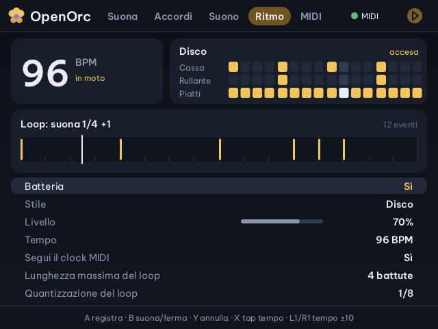
«suona 1/4 +1»: primo dei quattro giri di battuta, con una sovraincisione sopra. Le barre dorate sono gli accordi.
- Aregistra o sovraincidi
- Bsuona o ferma
- Yannulla
- Xtap tempo: battilo almeno due volte
- L1 R1tempo −10 / +10
Stili di batteria: Disco, Psichedelico, Trap, Bossa nova. Accendere la batteria avvia il trasporto. Mentre registri, i piatti fanno da metronomo.
Il loop dura al massimo 1, 2, 4 o 8 battute e la quantizzazione allinea quello che suoni a 1/16, 1/8 o 1/4. Se arriva un clock MIDI, il tempo lo detta lui.
Pagina MIDI
Insegnale qualunque tastiera
Ogni riga è un comando di OpenOrc con il controllo che lo muove. Per cambiarlo: A sulla riga, poi premi o gira il controllo sulla tastiera.
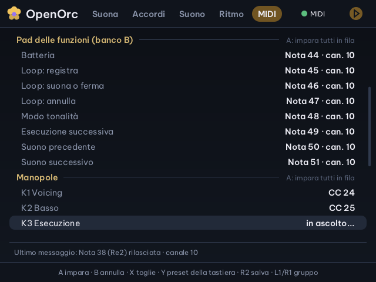
«in ascolto…»: gira la manopola che vuoi per K3. In fondo, l'ultimo messaggio arrivato.
- Aimpara la riga; sull'intestazione, tutto il gruppo in fila
- Bannulla l'apprendimento
- Xtoglie l'assegnazione
- Ycarica il prossimo preset della tastiera
- R2salva la mappa in Saves/openorc/tastiere/
- L1 R1gruppo precedente o successivo
Tipo di manopole. Assolute: 0–127, il valore salta dov'è la manopola. Relative: 1–63 sale, 65–127 scende, come la MPK mini IV. Relative (64): 64 è fermo.
«Ultimo messaggio», in fondo alla pagina, dice nota o CC, canale e porta: il modo più rapido per capire cosa manda una tastiera.
Tastiere nuove
Qualunque tastiera, configurata dall'IA
Colleghi una tastiera MIDI che OpenOrc non conosce: ti chiede se farla configurare dall'intelligenza artificiale. Tu muovi i controlli, lei decide dove metterli, tu confermi. La volta dopo si ricorda da sola.
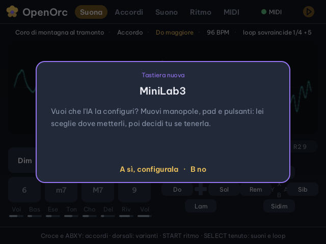
1. Colleghi la tastiera: compare la domanda. A sì, B no. C'è anche nella prima riga della pagina MIDI.
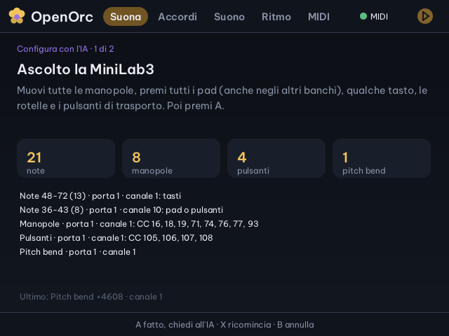
2. Muovi tutto: OpenOrc conta note, manopole, pulsanti e rotelle. Intanto la tastiera non suona. Poi A.
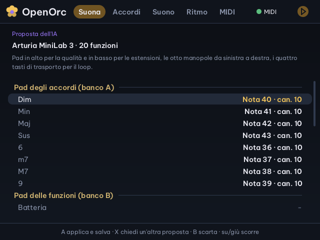
3. La proposta: ogni funzione con il suo controllo. A applica e salva, X ne chiede un'altra, B la scarta.
Cosa sa l'IA. Riceve il nome della tastiera e i controlli che hai mosso. Usa anche quello che sa di quel modello, così i pad degli accordi seguono la fila in alto da sinistra a destra e le manopole vanno da K1 a K8 nell'ordine giusto.
Cosa controlla OpenOrc. Tiene solo i controlli che hai mosso davvero, ognuno una volta sola, e non assegna mai i tasti del pianoforte: quelli servono a suonare. Il tipo di manopole, assolute o relative, lo capisce dai valori.
Ogni tastiera la sua mappa. Si salva in Saves/openorc/tastiere/ con il nome della tastiera e si ricarica da sola quando la ricolleghi.
Il modello è gratuito. OpenOrc usa il migliore gratuito tra quelli di cui hai una chiave: prima Groq con gpt-oss 120B, gratis senza carta e velocissimo, poi OpenRouter, GLM e Mistral con i loro modelli gratuiti.
- Crea la chiavesu console.groq.com, voce API Keys
- Salvalain Chiedi all'IA, scheda Fornitori, oppure in Saves/claude/chiavi/groq.txt
- Serveil Wi-Fi, solo durante la configurazione
Se qualcosa non va